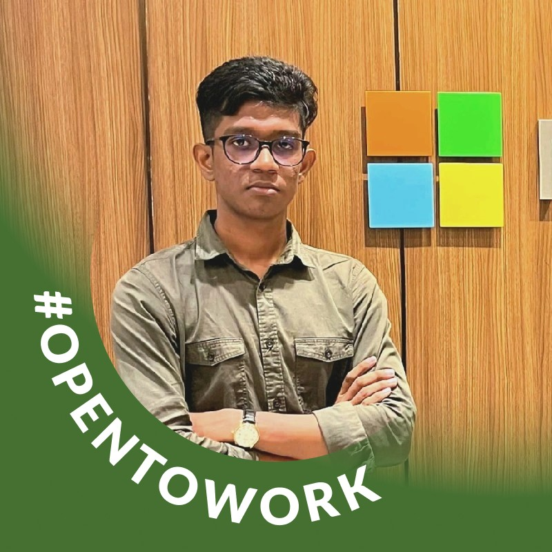

Task paralysis
When the task is too big, even opening it can feel overwhelming.
Calm productivity for ADHD minds
A calm productivity system designed for ADHD minds. Gentle structure, emotion-aware guidance, and one clear next step at a time.
When productivity feels heavy
NeuroSync was designed for moments that feel noisy, stuck, or emotionally loaded, not just the days when everything is already going well.
When the task is too big, even opening it can feel overwhelming.
Too many priorities at once turns planning into pressure.
Rigid systems break easily when real life changes shape.
Focus Mode
Calming soundscapes, a distraction-light interface, and one timer that helps you settle in without feeling watched.
AI Task Breakdown
NeuroSync gently breaks overwhelming work into clear, doable steps so getting started feels safer.
Adaptive Routine Builder
Flexible scheduling, smart reminders, and routines that support consistency without becoming rigid.
Mood Tracking
Track how you feel, notice patterns, and build self-awareness without judgment or performance pressure.
Minimal Dashboard
A clean home base for tasks, mood, routines, and recovery, designed to reduce cognitive load from the first glance.
Guilt-free recovery
Missed a routine? Lost momentum? NeuroSync helps you restart kindly, without streak anxiety, punishment, or shame.
How it is different
The people behind NeuroSync
A passionate group of designers and developers building calm, caring technology for ADHD minds.

Before you install
What to expect from the Android beta and where to get help.
The current beta is an Android APK for Android phones and tablets. There is no iOS build yet.
The beta is installed directly from this page rather than through Google Play. Android may ask you to allow installs from your browser. Only install an APK you downloaded from this page.
No. NeuroSync is a productivity and self-management tool, not a medical device, diagnosis, therapy, or emergency service.
The current Expo-hosted build is time-limited. Open the beta feedback link in the download section and request a fresh build.
Use the support page or the issue tracker linked from the download section. Do not post sensitive health information in a public issue.
Start gently
Download the current Android beta directly. Because this is an APK, Android will ask you to allow installs from your browser before the first install.
This beta build is hosted by Expo and is available for a limited time. If the link has expired, request a fresh build in the issue tracker.